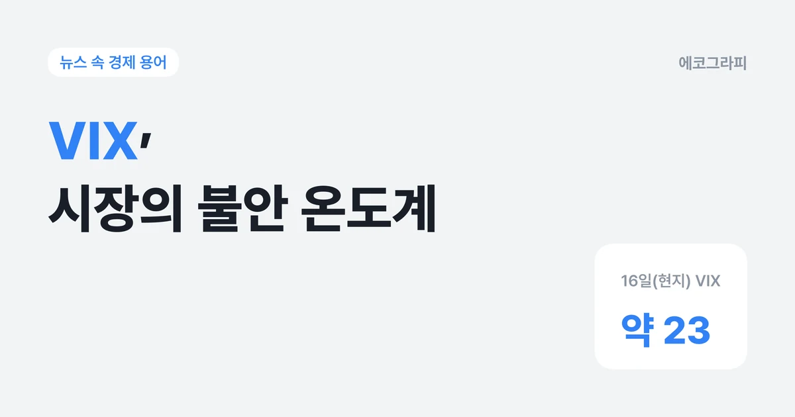
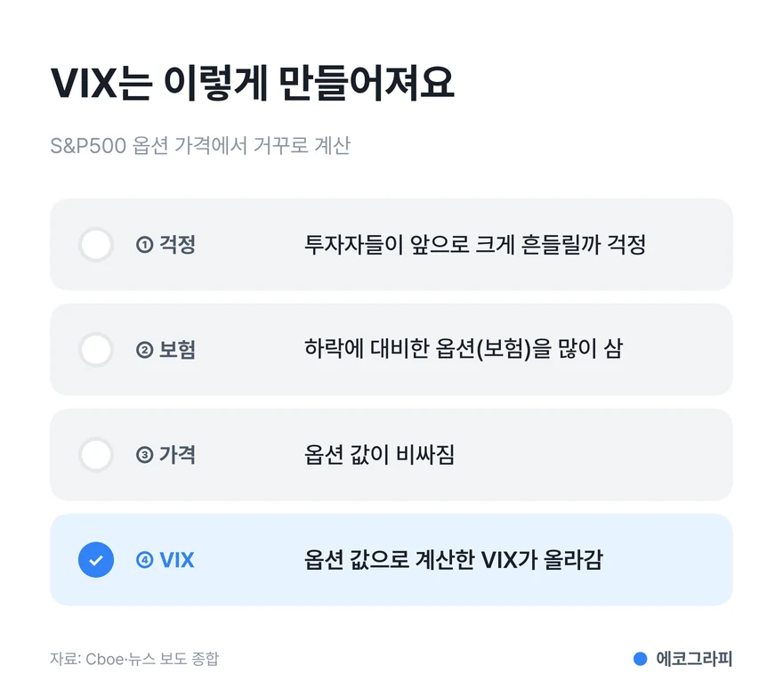
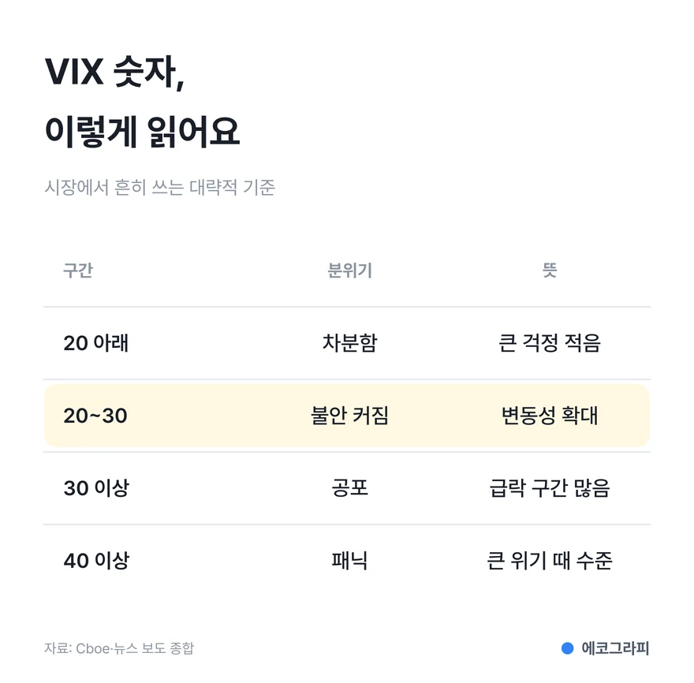
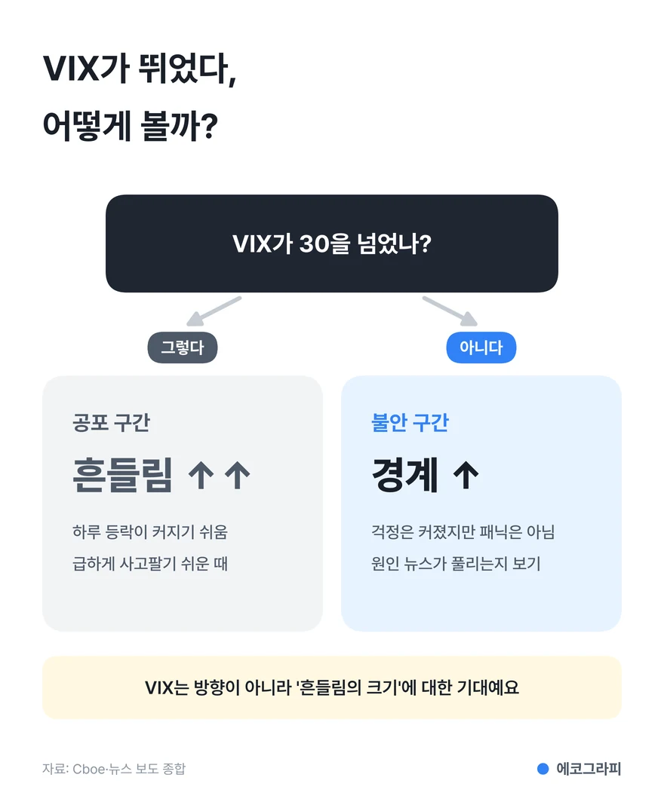
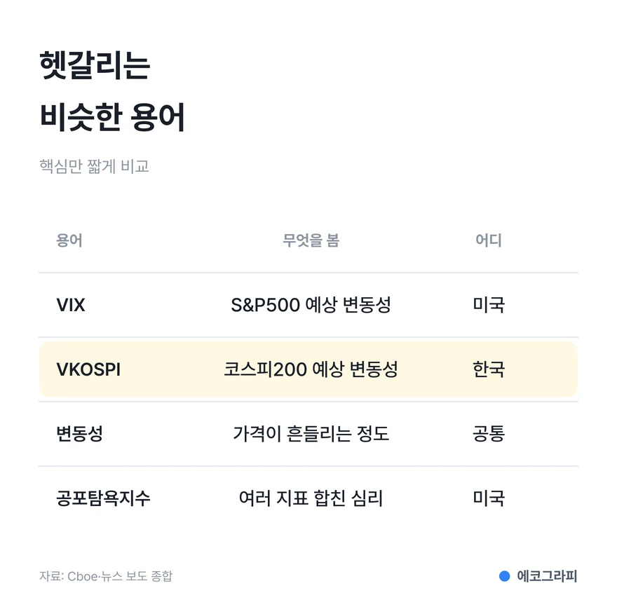

오늘 아침 미국 증시 기사에 이런 제목이 붙었어요. "엔비디아 약세 속 급락… '월가 공포지수' 19% 폭등". 나스닥이 2.49% 빠진 날, 이 '공포지수'가 하루 만에 크게 뛰었다는 뜻이에요. 여기서 말하는 공포지수가 바로 VIX예요. (어제 시장 흐름은 오늘 아침 시황에 정리했어요.)
VIX(Volatility Index, 변동성지수): 미국 시카고옵션거래소(Cboe)가 S&P500 옵션 가격으로 계산하는, 앞으로 30일간 시장이 얼마나 흔들릴지에 대한 예상치예요.
자동차 보험으로 비유해 볼게요. 눈이 많이 온다는 예보가 나오면 사람들이 보험을 더 찾고, 보험료가 올라가요. 주식시장도 비슷해요. 투자자들이 "곧 크게 떨어질 수도 있겠다"고 느끼면 하락에 대비하는 옵션(일종의 보험)을 많이 사고, 옵션 값이 비싸져요. 이 옵션 값을 거꾸로 계산해 만든 숫자가 VIX예요.

그래서 VIX는 주가와 반대로 움직이는 날이 많아요. 주가가 급하게 빠지면 VIX는 뛰고, 시장이 차분해지면 VIX도 내려와요.
VIX 숫자는 대략 "앞으로 1년 동안 위아래로 몇 % 정도 흔들릴 수 있다"는 연간 기준 예상치예요. 시장에서는 보통 아래처럼 구간을 나눠 읽어요. 정해진 공식 기준은 아니고, 흔히 쓰는 눈금이에요.

16일(현지) VIX는 23선이었어요. 심리적 기준인 20을 다시 넘었으니 '불안이 커진 구간'이에요. 다만 큰 위기 때처럼 30~40을 넘는 공포 단계까지는 아니었어요.

기억할 것: VIX는 "오를지 내릴지"가 아니라 "얼마나 크게 흔들릴지"에 대한 시장의 예상이에요.

한국에도 같은 방식의 지수가 있어요. VKOSPI는 코스피200 옵션 가격으로 계산해 '한국판 공포지수'라고 불러요. 공포탐욕지수는 VIX를 포함한 여러 지표를 섞어 투자 심리를 0~100으로 보여 주는 지표라, 옵션 가격만 쓰는 VIX와는 만드는 방식이 달라요.
VIX는 사고팔 신호가 아니라 흔들림이 커질 수 있다는 예상이에요. 오히려 높은 VIX 뒤에 반등한 때도 많아서, 숫자 하나로 판단하지 않는 게 좋아요.
미국 장이 열려 있는 동안 계속 바뀌어요. 증권사 앱이나 포털 해외지수 화면에서 'VIX'로 찾으면 돼요.
아니에요. 시장이 지금은 차분하다고 예상한다는 뜻일 뿐이에요. 갑작스러운 사건이 생기면 VIX도 빠르게 뛸 수 있어요.
VKOSPI(코스피200 변동성지수)를 보면 돼요. 한국거래소가 계산해 발표해요.
※ 2026년 11월 기준으로 정리한 글입니다. 세율·제도는 바뀔 수 있으니 거래 전 증권사·국세청 안내를 한 번 더 확인하세요. 특정 종목·상품의 매수·매도 권유가 아닙니다.